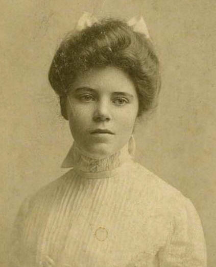

Her Life

Alice Paul was a major figure in the United States Woman Suffrage Movement. Alice was raised was raised to believe in gender equality by her mother, who was a member of a suffrage group when Alice was younger.
lice first became interested in becoming an active suffragist when she went to England. She took part in a campaign that smashed windows and went on hunger strikes in prisons to raise awareness to the issue.
When she returned to the US she joined a suffrage group and was soon appointed head. They organised a parade and were attacked by men while police watched. She then focused on getting the president’s attention and vote. They were arrested and treated terribly. The news of the prison conditions came out and caused many people to support women's suffrage.
On August 24, 1920, Alice's goal was achieved when the 19th Amendment was ratified and women finally had the right to vote. Alice Paul continued to fight for completely equal treatment for women and men for the rest of her life.